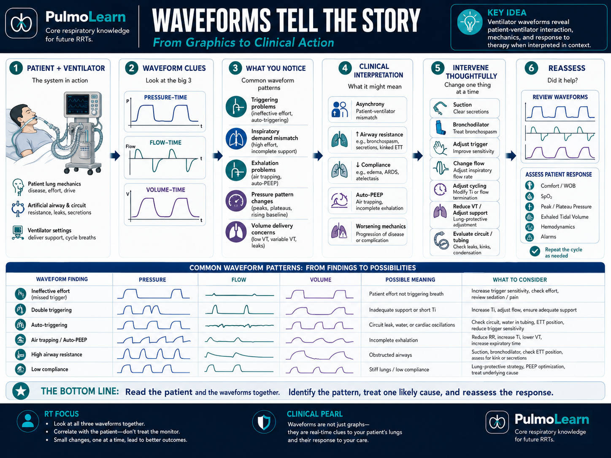
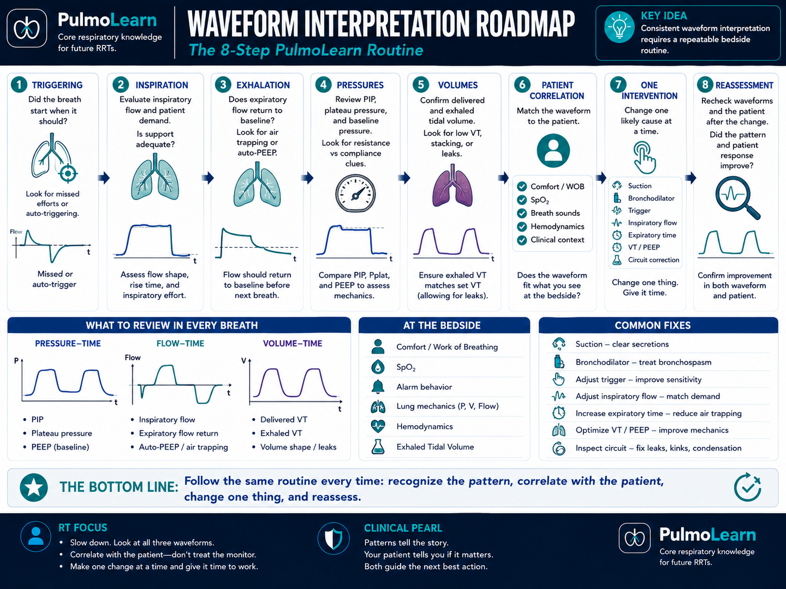

What You Will Learn in Part 1
By the end of this section, you will be able to:
- Explain why ventilator graphics can reveal problems before alarms, ABGs, or oxygen saturation changes.
- Use a consistent sequence to interpret every breath.
- Interpret pressure-time waveforms for changes in resistance and compliance.
- Interpret flow-time waveforms for auto-PEEP and flow starvation.
- Connect a waveform pattern to patient assessment and select one appropriate intervention.
Mr. Johnson Is Uncomfortable—But No Alarm Has Sounded
Mr. Johnson, your 68-year-old patient with COPD, was intubated yesterday for acute-on-chronic respiratory failure. During morning report, the night therapist tells you that his oxygenation has improved and his FiO₂ is now 0.35. The ventilator is set to volume assist/control with a tidal volume of 420 mL, rate 14/min, PEEP 5 cmH₂O, and inspiratory flow 50 L/min.
When you enter the room, the monitor shows:
| Heart rate | 112/min |
|---|---|
| Blood pressure | 136/78 mmHg |
| SpO₂ | 93% |
| Total respiratory rate | 22/min |
| Appearance | Awake, restless, using accessory muscles |
The alarms are quiet. The oxygen saturation is acceptable. Yet the patient looks uncomfortable.
Decision Checkpoint
Every Breath Leaves a Trace
Ventilator waveforms are not decorative graphs. They are a continuous record of the relationship among pressure, flow, volume, time, and patient effort. Experienced therapists glance at them constantly because they answer questions that a single number cannot.
Waveforms often change before a high-pressure alarm activates, before the oxygen saturation falls, and long before a new ABG is drawn. They allow you to recognize trends and intervene earlier.

Use the Same Sequence Every Time
- Is the patient triggering?
- Is inspiration smooth and adequate?
- Is exhalation complete?
- Are pressures changing?
- Are delivered and exhaled volumes appropriate?
- Do the graphics match the patient?
- What is the single best intervention?
What Pressure Was Required to Deliver the Breath?
The pressure-time waveform plots airway pressure on the vertical axis and time on the horizontal axis. In volume-targeted ventilation, the pressure required to deliver the set tidal volume changes as airway resistance and respiratory-system compliance change.
Two values are especially important:
- Peak inspiratory pressure (PIP): includes pressure needed to overcome airway resistance plus pressure needed to expand the lungs and chest wall.
- Plateau pressure (Pplat): measured during an inspiratory hold when flow is zero; it more closely reflects alveolar pressure and static compliance.
Pressure-Time Comparison
Interpret the Trend
Yesterday: PIP 25 cmH₂O, Pplat 20 cmH₂O. Today: PIP 40 cmH₂O, Pplat 21 cmH₂O.
Resistance or Compliance?
PIP rises, Pplat stable
Think secretions, bronchospasm, tube obstruction, biting, kinked tubing, water, or a narrowed artificial airway.
PIP and Pplat both rise
Think ARDS, edema, atelectasis, pneumothorax, abdominal distention, positioning, or reduced chest-wall compliance.
Always pair the pressure trend with the bedside examination. A pressure pattern narrows the possibilities, but breath sounds, suction catheter passage, chest symmetry, hemodynamics, and imaging determine the cause.
Guided Case
A patient with ARDS has a sudden rise in PIP from 28 to 38 cmH₂O and Pplat from 24 to 34 cmH₂O. Breath sounds are diminished on the left, blood pressure falls, and SpO₂ decreases.
Is Gas Moving In and Out at the Right Time?
The flow-time waveform displays inspiratory flow above the baseline and expiratory flow below it. It is one of the most useful graphics for recognizing incomplete exhalation and mismatches between patient demand and ventilator flow.
Flow-Time Comparison
Identify the Abnormality
The expiratory flow curve remains below baseline when the next inspiration begins.
The Lungs Did Not Finish Emptying
Auto-PEEP develops when the next breath begins before the previous breath has fully exhaled. Gas becomes trapped, end-expiratory lung volume rises, and the patient must overcome intrinsic pressure before triggering the next breath.
Common contributors include:
- Obstructive disease such as COPD or asthma
- High respiratory rate
- Large tidal volume
- Long inspiratory time or low inspiratory flow
- Bronchospasm or secretions
Clinical Decision
Mr. Johnson’s expiratory flow does not return to baseline. His total rate is 26/min, blood pressure is falling, and the expiratory phase is visibly prolonged.
The Patient Wants More Flow Than the Ventilator Is Delivering
During volume ventilation, a scooped or concave inspiratory pressure contour can indicate that the patient’s inspiratory demand exceeds the set flow. Clinically, the patient may look air hungry, use accessory muscles, or pull strongly against the breath.
Possible responses include increasing inspiratory flow, changing the flow pattern, adjusting rise time in pressure-targeted ventilation, treating pain or anxiety, and correcting metabolic drivers of high respiratory demand.
Clinical Decision
The patient is awake and cooperative. The inspiratory contour is scooped inward, accessory muscle use is present, and the set inspiratory flow is 35 L/min.
Did the Delivered Volume Come Back?
The volume-time waveform tracks the amount of gas delivered and returned during each breath. During inspiration, volume rises. During exhalation, it should return to baseline.
If the waveform does not return to baseline, some of the delivered volume was not measured returning through the expiratory limb. Common causes include:
- Endotracheal or tracheostomy cuff leak
- Loose circuit connection
- Bronchopleural fistula
- Chest tube air leak
- Intentional leak around some noninvasive interfaces
Volume-Time Comparison
Not Every Lost Volume Has the Same Cause
A sudden loss of exhaled volume in an intubated patient is more urgent than a small stable leak during noninvasive ventilation. Ask:
- Did the leak begin suddenly?
- Is the patient unstable?
- Did airway pressure also fall?
- Is there an audible leak?
- Has the tube depth changed?
Identify the Pattern
The volume-time waveform rises normally during inspiration but remains above baseline after exhalation.
Guided Case: Sudden Volume Loss
An intubated patient’s exhaled VT falls from 430 mL to 110 mL. PIP falls from 24 to 9 cmH₂O. You hear a loud leak at the mouth and the tube marking has changed.
How Much Volume Is Gained for the Pressure Applied?
A pressure-volume loop plots pressure on the horizontal axis and volume on the vertical axis. The slope reflects compliance: a steeper loop means more volume is achieved for a given pressure; a flatter loop means the respiratory system is stiffer.
Pressure-volume loops can help you recognize:
- Reduced compliance
- Improved recruitment after PEEP or positioning
- Overdistention or “beaking”
- Changes in lower and upper inflection behavior
Pressure-Volume Loop Comparison
Interpret the Loop
The loop shifts right and becomes flatter compared with the previous hour.
When More Pressure Produces Little Additional Volume
Overdistention appears near the upper portion of the pressure-volume loop when the curve begins to flatten or develop a “beak.” This means additional pressure is producing little additional volume because the lung units are approaching their limit.
Possible contributors include:
- Excessive tidal volume
- Excessive inspiratory pressure
- Excessive PEEP in a patient with already-open alveoli
- Heterogeneous lung disease where some regions are overinflated while others remain collapsed
Clinical Decision
An ARDS patient’s pressure-volume loop shows upper beaking. Plateau pressure is 32 cmH₂O and VT is 8 mL/kg PBW.
What Changed After the Intervention?
When PEEP, prone positioning, secretion clearance, or recruitment improves alveolar participation, the pressure-volume loop may become steeper and shift left. The same pressure now produces more volume.
But improved loop shape alone is not enough. Reassess:
- SpO₂ and FiO₂ requirement
- Plateau pressure and driving pressure
- Blood pressure and cardiac output
- Exhaled tidal volume and patient comfort
No. An intervention must improve the patient, not just the graphic.
How Does Flow Change as Volume Moves?
A flow-volume loop plots flow on the vertical axis and volume on the horizontal axis. Inspiratory flow is commonly displayed above the baseline and expiratory flow below it.
Flow-volume loops can help identify:
- Airflow obstruction
- Bronchospasm
- Secretions
- Leaks
- Changes after bronchodilator treatment
Flow-Volume Loop Comparison
Identify the Pattern
The expiratory limb becomes scooped inward and expiratory flow is prolonged.
Bronchospasm, Secretions, or Both?
Both bronchospasm and secretions can distort expiratory flow. Use the bedside examination to separate them:
Diffuse expiratory wheeze
May improve after bronchodilator. Airway resistance and PIP often rise.
Coarse rhonchi or sawtooth pattern
May improve after suctioning. Catheter passage and secretion burden help confirm.
Clinical Decision
The flow-volume loop is obstructive. Breath sounds reveal diffuse wheezing, the suction catheter passes easily, and little secretion is returned.
Use the Right Graphic for the Right Question
| Clinical question | Most useful graphic | What to look for |
|---|---|---|
| Is volume leaking? | Volume-time or flow-volume loop | Failure to return to baseline or loop closure failure |
| Has compliance changed? | Pressure-volume loop | Slope and left/right shift |
| Is overdistention occurring? | Pressure-volume loop | Upper beaking or flattening |
| Is airflow obstructed? | Flow-volume loop | Scooped expiratory limb and prolonged exhalation |
One Waveform Gives a Clue—Three Waveforms Tell the Story
Ventilator graphics are most powerful when interpreted together. A single abnormality may have several causes, but the combination of pressure, flow, volume, patient effort, and bedside assessment narrows the possibilities.
Pressure
Repeated negative deflections suggest patient effort. Some efforts may fail to trigger a breath.
Flow
Expiratory flow fails to return to baseline, indicating incomplete exhalation.
Volume
Delivered and exhaled volume return appropriately, making a major leak less likely.
Together, these graphics suggest a patient who is trying to trigger but must first overcome intrinsic PEEP. The likely issue is not a disconnected circuit—it is increased trigger burden from dynamic hyperinflation.
Integrated Interpretation
Pressure shows repeated negative deflections, flow fails to return to baseline, and volume returns normally.
Is the Patient Starting the Breath Successfully?
A triggered breath begins when the ventilator detects patient effort through a pressure or flow change. Triggering problems occur when the patient must work too hard to start a breath—or when the ventilator starts breaths without true patient effort.
Effort without a delivered breath
Common causes: auto-PEEP, weak effort, insensitive trigger, excessive support, sedation, or neuromuscular weakness.
Delivered breath without true effort
Common causes: overly sensitive trigger, circuit leak, water movement, cardiac oscillation, or external movement.
Guided Case: Missed Efforts
A COPD patient has visible inspiratory effort and repeated negative pressure deflections that are not followed by ventilator breaths. Expiratory flow does not return to baseline.
The Patient’s Inspiratory Effort Outlasts the Ventilator Breath
Double triggering occurs when one patient effort produces two ventilator breaths with little or no exhalation between them. The combined volume may approach twice the intended tidal volume, increasing the risk of overdistention and ventilator-induced lung injury.
Common causes include:
- Inspiratory time that is too short
- Tidal volume or inspiratory support that does not meet demand
- High respiratory drive from pain, anxiety, acidosis, fever, or hypoxemia
- Flow delivery that is inadequate
Clinical Decision
An ARDS patient is receiving 6 mL/kg PBW. The waveform shows two breaths delivered back-to-back during a single prolonged inspiratory effort. The patient is febrile and acidotic.
Is Inspiration Ending at the Right Time?
Cycling determines when inspiration ends and exhalation begins. When ventilator timing does not match the patient’s neural inspiratory time, the patient may fight the transition.
Ventilator ends inspiration too soon
The patient continues inhaling after the ventilator cycles to exhalation. This may cause double triggering or a late inspiratory pressure deflection.
Ventilator continues inspiration too long
The patient attempts to exhale while the ventilator is still delivering the breath, producing discomfort and pressure distortion.
Possible interventions depend on mode. In pressure support, adjusting the cycling threshold can shorten or lengthen inspiratory time. In controlled modes, inspiratory time, flow, and rise time may need adjustment.
Guided Case: Delayed Cycling
A patient on pressure support begins actively exhaling before inspiratory flow has cycled off. The pressure waveform rises late in inspiration, and the patient appears to “push” against the breath.
One Snapshot Can Mislead You
Experienced therapists compare the current graphic with the patient’s earlier pattern. The direction of change often matters more than whether a single value appears acceptable.
PIP 27, Pplat 20, total RR 18, expiratory flow returns to baseline, SpO₂ 94%.
PIP 31, Pplat 20, total RR 22, expiratory flow nearly reaches baseline, patient mildly restless.
PIP 38, Pplat 21, total RR 28, expiratory flow remains below baseline, BP falling, ETCO₂ rising.
This trend shows increasing resistance and worsening air trapping. The rising rate is not compensating effectively—it is contributing to shorter exhalation and dynamic hyperinflation.
What Changed?
Mr. Johnson: From Subtle Waveform Change to Hemodynamic Compromise
| Finding | Earlier | Now |
|---|---|---|
| PIP | 28 cmH₂O | 39 cmH₂O |
| Pplat | 20 cmH₂O | 21 cmH₂O |
| Total RR | 18/min | 27/min |
| Expiratory flow | Returns to baseline | Does not return to baseline |
| Triggering | Each effort triggers | Several ineffective efforts |
| BP | 134/76 | 92/58 |
| Breath sounds | Diminished | Diminished with diffuse wheeze |
1. What is the primary mechanical problem?
2. Why are some efforts ineffective?
3. What is the best first ventilator strategy after immediate assessment?
4. What improvement would confirm success?
A New Patient, No Hints
A 54-year-old woman with severe asthma is intubated and receiving volume assist/control ventilation. Current settings are VT 420 mL, rate 18/min, FiO₂ 0.40, PEEP 5 cmH₂O, and inspiratory flow 45 L/min.
Over the last 20 minutes she has become restless. Her heart rate is 132/min, blood pressure is 96/58 mmHg, SpO₂ is 92%, and total respiratory rate is 30/min. Breath sounds reveal diffuse expiratory wheezing.
| Parameter | Earlier | Now |
|---|---|---|
| PIP | 29 cmH₂O | 44 cmH₂O |
| Pplat | 21 cmH₂O | 22 cmH₂O |
| Expiratory flow | Returned to baseline | Does not return to baseline |
| Pressure contour | Smooth | Inspiratory scooping |
| Triggering | All efforts trigger | Several ineffective efforts |
1. What is the primary mechanical problem?
2. What does the flow waveform add?
3. What does inspiratory scooping suggest?
4. What is the best immediate ventilator strategy after assessing the patient?
5. Which improvement would confirm that the intervention worked?
Ventilator Graphics Mastery Check
1. PIP increases while Pplat remains stable. What changed?
2. Both PIP and Pplat increase. What should you suspect?
3. Expiratory flow does not return to baseline. What does this indicate?
4. A volume-time waveform fails to return to baseline. What is most likely?
5. Upper beaking on a pressure-volume loop suggests:
6. A scooped expiratory limb on a flow-volume loop suggests:
7. One effort produces two consecutive breaths. What is this called?
8. The patient begins exhaling while the ventilator continues inspiration. This indicates:
Reassessment Checklist
- Is the patient more comfortable?
- Is each patient effort producing an appropriate breath?
- Is inspiratory flow meeting demand?
- Does expiratory flow return to baseline?
- Are PIP and Pplat moving in the expected direction?
- Are delivered and exhaled volumes appropriate?
- Did blood pressure or oxygenation worsen after the change?
- What will you reassess in 15–30 minutes?
The PulmoLearn Waveform Routine
- Is the patient triggering?
- Is inspiration smooth and adequate?
- Is exhalation complete?
- Are pressures changing?
- Are volumes appropriate?
- Do the graphics match the patient?
- What is the single best intervention?
- How will you know it worked?
